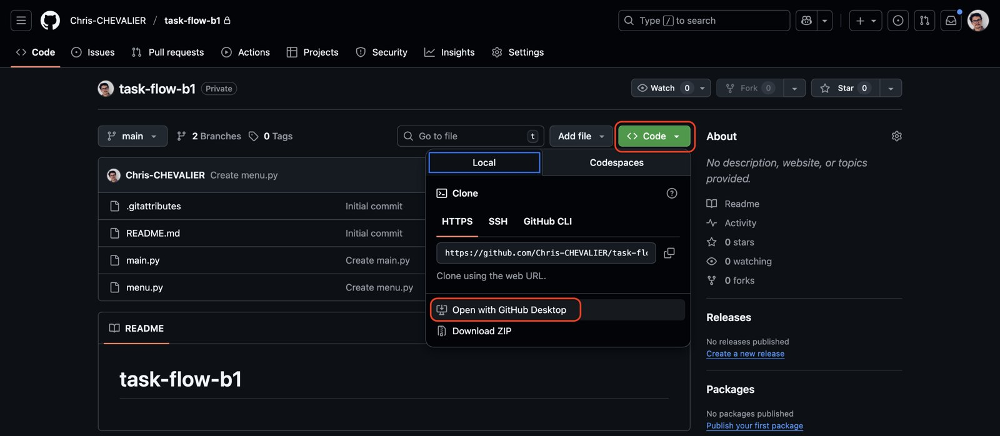
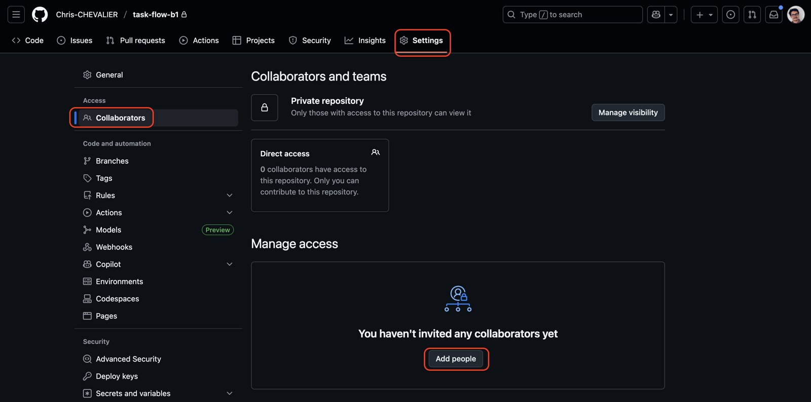
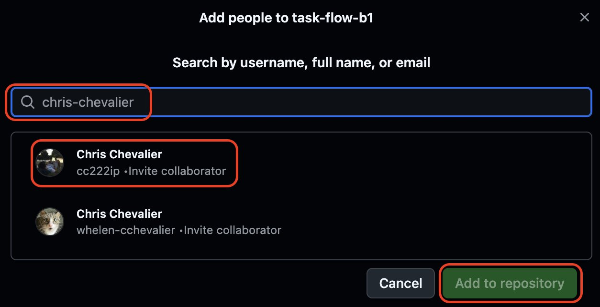
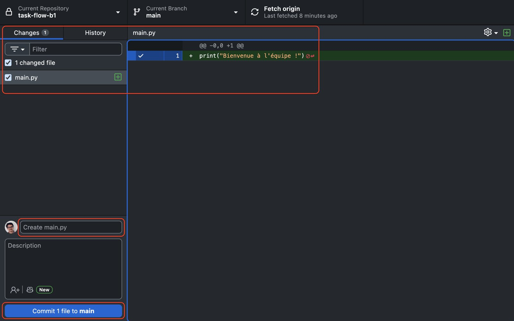
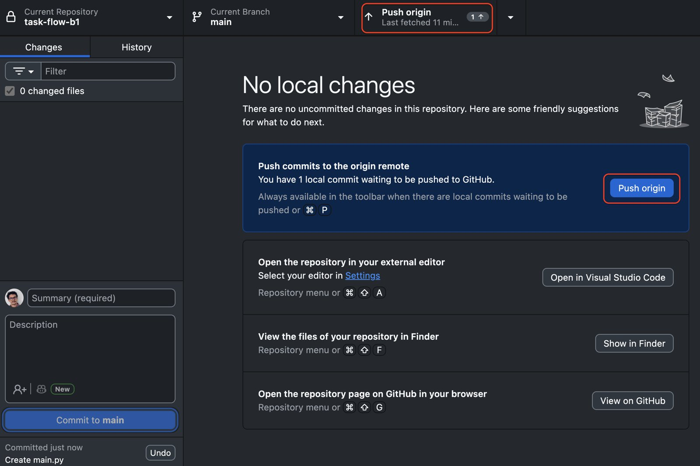
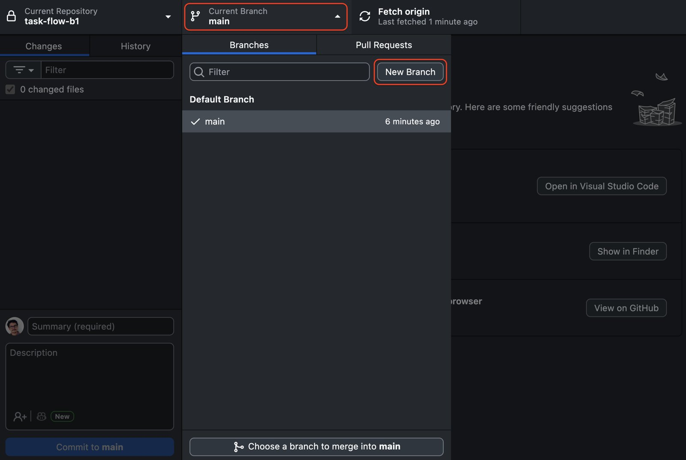
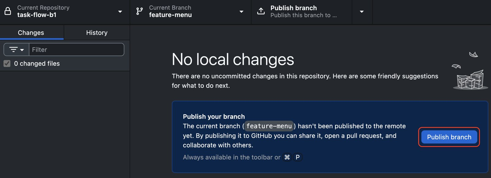

rapport.docx
rapport-v2.docx
rapport-v2-relu-par-Manon.docx
rapport-final.docx
rapport-final-v3.docx
rapport-final-v3-VRAIMENT-final.docx
Logiciel libre : logiciel que chacun peut utiliser, étudier, modifier et redistribuer. D'autres hébergeurs existent : GitLab, Codeberg…
| Message | Avis |
|---|---|
| « modifs » | ✗ |
| « update README.md » | ✗ |
| « Ajout des user stories du sprint 1 » | ✓ |
Dépôt local : le dossier du projet sur votre ordinateur. Dépôt distant : sa copie sur GitHub.
main contient la version validée du projetuser-storiesmain. On parle de merge.
mainManon ouvre la PR « Ajout des user stories du sprint 1 ».
Cosmo signale une story sans critère d'acceptation. Manon corrige, la PR se met à jour.
Cosmo approuve, Chris fusionne.
Sur GitLab, on parle de merge request.
<<<<<<< HEAD
# Appli de covoiturage étudiant
=======
# CoVoit'Campus
>>>>>>> titre-projet
Markdown : du texte simple et quelques symboles. Fichier en .md, affiché mis en forme par GitHub.
| J'écris | J'obtiens |
|---|---|
# Titre | le titre du document (un seul) |
## Section · ### Sous-section | des titres de section |
**important** · *nuance* | important · nuance |
- élément | une liste à puces |
1. étape | une liste numérotée |
- [ ] à faire · - [x] fait | des cases à cocher |
| J'écris | J'obtiens |
|---|---|
[Trello](https://trello.com) | un lien cliquable |
 | une image |
`docs/need.md` | un nom de fichier ou une commande |
> Citation | un paragraphe en retrait |
| A | B | puis |---|---| | un tableau |
Une ligne vide sépare deux paragraphes. Toute la syntaxe : écriture et mise en forme sur GitHub. L'onglet Preview de l'éditeur de GitHub montre le résultat avant d'enregistrer.
GitHub l'affiche sous la liste des fichiers : c'est la première chose qu'on lit en ouvrant votre dépôt.
En une minute, il répond à quatre questions :
docs/ (liens)
# Grand Prix Hexagone
Application web du tournoi Mario Kart de la rentrée :
inscriptions, grille des courses et classement en direct.
## Le client et son besoin
Le **bureau des étudiants** veut en finir avec le papier.
Détails : [docs/need.md](docs/need.md)
## L'équipe
| Membre | Rôle |
|--------|---------------|
| Manon | Product Owner |
| Cosmo | Scrum Master |
| Chris | Developer |
## Liens
- [Tableau Trello](https://trello.com/b/…)
- [Projet GitHub](https://github.com/…/projects/1)
## Avancement
- [x] Besoin reformulé et validé
- [x] Backlog estimé
- [ ] Sprint 1 terminé
## Usage de l'IA
Le Chat (Mistral AI) a relu `docs/need.md`.
#, une section ## par question, des liens plutôt que des copier-coller.
GitHub Desktop utilise Git sans taper de commande : chaque bouton en lance une à votre place.
Double authentification : en plus du mot de passe, un code donné par une application du téléphone. Un mot de passe volé ne suffit plus.

Cloner : télécharger une copie complète d'un dépôt, historique compris. Une seule fois par ordinateur. Autre chemin : File → Clone repository dans GitHub Desktop.

Sur github.com : Settings → Collaborators → Add people

Saisissez le nom d'utilisateur, puis Add to repository. Le membre accepte l'invitation reçue par e-mail.

Changes : cochez les fichiers (Add), écrivez le message dans Summary, puis Commit to main.

Puis Push origin envoie le commit sur GitHub.
1gest-demo-grand-prix, Private, Add a README file, Create repositoryREADME.md et y coller le README de la diapo « Un README complet »Ajout de la présentation du projet, puis Commit to main
Current Branch → New Branch, un nom clair, Create Branch. Faites vos commits.

Publish branch, puis Preview Pull Request → Create Pull Request (vérifiez base: main).
main et fait un Pull.
docs/needdocs/need.md et coller : # Besoin reformulé puis Objectif : inscrire 64 joueurs avant le 1er octobre.Ajout du besoin reformulé, puis Publish branchAjout du besoin reformulé. Description : Closes #1main et Pull origin| Dans GitHub Desktop | Commande Git | Rôle |
|---|---|---|
| Clone repository | git clone <adresse> | copier un dépôt distant |
| Cocher les fichiers | git add <fichier> | préparer le commit |
| Commit to main | git commit -m "message" | enregistrer une étape |
| Push origin | git push | envoyer sur GitHub |
| Pull origin | git pull | récupérer le travail de l'équipe |
| New Branch | git switch -c <nom> | créer une branche et s'y placer |
| Merge into current branch | git merge <branche> | fusionner une branche |
Pour information : ces commandes se tapent dans un terminal. Vous n'en avez pas besoin ici. Le livre Pro Git (en français)
Closes #3 dans une PR ferme l'issue n° 3documentation sprint 1
Assignée à Manon · 3 points
Sprint 1, date de fin 11/12/2026Rédiger le besoin reformulé, assignée à moi, milestone Sprint 1Saisie des scores (5), label Must, description avec - [ ] Je choisis la course et - [ ] Le classement se met à jourGrand Prix Hexagone, puis relier le dépôt et ajouter les deux issuesSouveraineté numérique : capacité à maîtriser ses outils et ses données sans dépendre d'un seul acteur. Le Cloud Act est une loi américaine de 2018.